地政学
ボロブドゥールは首都でも港湾都市でもないが、インドネシアが多宗教の歴史を世界へ示す象徴である。ジョグジャカルタ、マゲラン、スマランを結ぶ観光動線に置かれ、保存政策と地域開発が重なる要地だ。文化外交も映る。
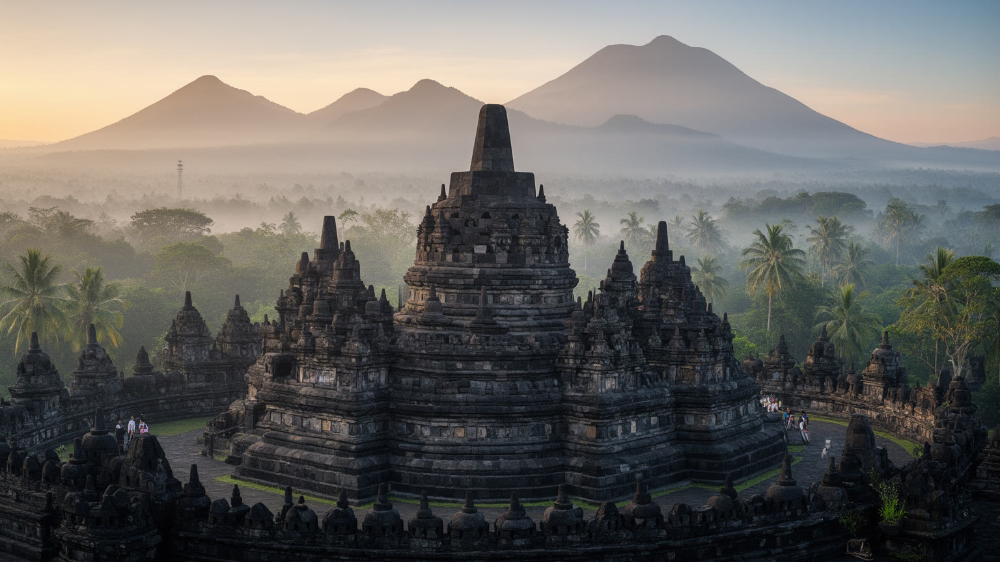
🇮🇩 インドネシア / アジア / World City Atlas
巨大な仏教寺院を中心に、ケドゥ盆地の水田、村落、巡礼、観光労働、イスラムが多数を占める日常、火山と丘陵の景観が重なる遺産都市圏です。
都市の骨格
ボロブドゥールは大都市ではありません。けれど、世界遺産の寺院、メラピ山とメルバブ山に近い盆地、村の水田、観光の仕事、巡礼の記憶が短い距離で重なるため、都市と農村の境界を問い直す場所です。
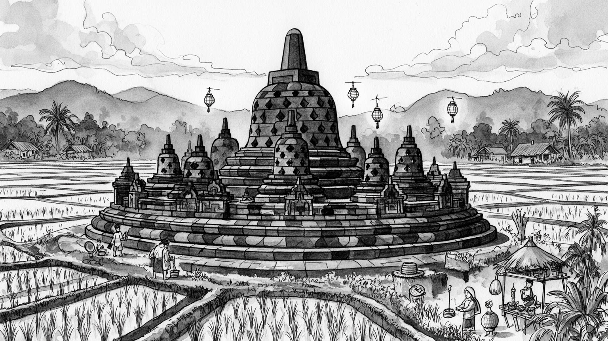
ボロブドゥールは首都でも港湾都市でもないが、インドネシアが多宗教の歴史を世界へ示す象徴である。ジョグジャカルタ、マゲラン、スマランを結ぶ観光動線に置かれ、保存政策と地域開発が重なる要地だ。文化外交も映る。
米作、畑作、宿泊、飲食、案内、送迎、土産物、石彫、竹細工、清掃、警備が観光を支える。繁忙期の現金収入は大きいが、雨季、噴火、感染症、交通規制で仕事が急に細る脆さも抱える生活圏です。副業の厚みが家計を守る。
寺院は大乗仏教の壮大な記憶を伝える一方、周辺住民の多くはイスラムを日常の信仰とする。ワイサックの灯火、村の祭礼、ジャワの芸能、先祖への敬意が重なり、過去と現在は別々に存在しない。祈りの多層性が魅力だ。
朝霧の寺院は世界的な名所だが、住民には水、学校、家賃、農地、道路、廃棄物、土地利用の課題がある。観光の収益を村の暮らしへ戻せるかが、遺産景観を長く保つための核心になります。滞在の質は地域への還元で決まる。
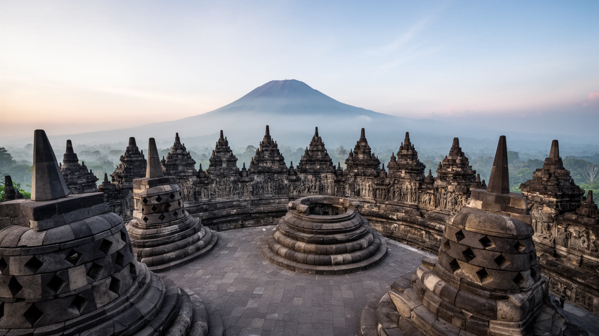
ボロブドゥール寺院は、単なる巨大な石造建築ではなく、仏教の宇宙観を丘の形に重ねた立体的な巡礼路です。基壇から回廊をめぐり、浮彫に刻まれた物語を読みながら上へ進む構成は、人が欲望、行為、学び、解脱へ向かう道を身体でたどらせます。中央ジャワのシャイレーンドラ朝期に築かれたとされるこの寺院は、周囲の火山、川、水田、村落と切り離せません。石材の運搬、彫刻、排水、見晴らし、参道の向きは、宗教だけでなく労働と地形の知識を必要としました。現在の訪問者は朝日や石塔のシルエットを見に来ますが、寺院の本質は写真の一瞬より長い時間にあります。仏像、ストゥーパ、ジャータカ物語、巡礼の歩幅は、王権、信仰、職人、農民の世界を結びます。イスラムが多数を占める現代インドネシアにおいて、この仏教遺産が国民的な誇りとして守られていることも重要です。ボロブドゥールを読むとは、古代の宗教建築を現代の多宗教国家がどう受け止め、地域の生活と観光の中でどう生かしているかを見ることです。石の静けさは、過去が現在から遠く離れていることを意味しません。むしろ寺院は、保存技術、入場管理、巡礼、学校教育、地域の働き口を通じて、いまも社会の中心で機能しています。回廊を一段ずつ上がる体験は、知識として読む歴史を、身体で理解する時間へ変えます。だからこそ、寺院を単なる展望台にせず、歩く速さや沈黙まで含めて尊重する姿勢が必要です。
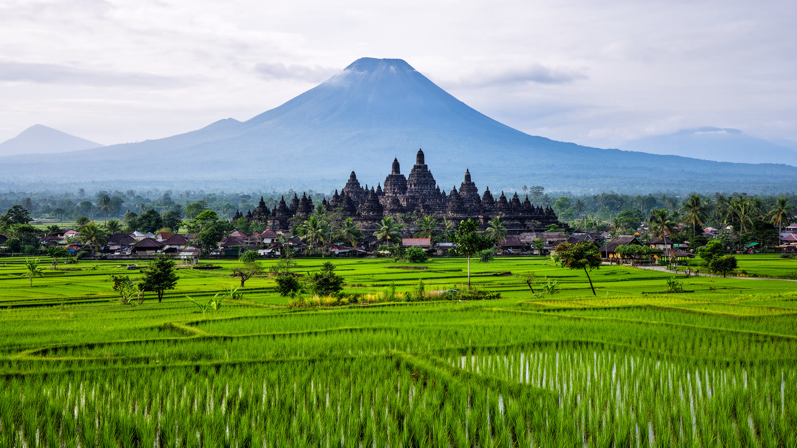
ボロブドゥールの景観を決めるのは、寺院だけではありません。周囲にはメラピ山、メルバブ山、スンビン山、ムノレ丘陵が見え、ケドゥ盆地の水田と村が寺院を包みます。火山灰に育まれた土壌は農業を支え、川と用水路は稲作、生活用水、排水をつなぎます。一方で、火山活動、土砂、豪雨、地震はこの地域のリスクでもあります。寺院は丘の上にあるため洪水から距離がありますが、周辺村落の道や農地は雨季にぬかるみ、排水の条件で暮らしが変わります。観光客が見る朝霧の美しさは、湿度、標高、田畑、樹木、村の煙、季節風が作る複合的な風景です。古代の建設者も、単に宗教的な場所を選んだのではなく、山、川、視界、集落、農地の関係を読んでいたはずです。現代の保存でも地形は重要です。雨水が石材を傷めないよう排水を整え、斜面の植生を保ち、観光車両の集中を制御しなければなりません。ボロブドゥールを都市として見る時、中心は高層ビルではなく、石造寺院と水田、火山、村道が作る広域の生活インフラです。自然は背景ではなく、観光、農業、信仰、災害対策を同時に決める基盤です。乾季には見晴らしと移動が安定し、雨季には緑が深まる代わりに道路や排水への負荷が増えます。季節の違いを読むことは、景観の美しさだけでなく、そこで暮らす人の労働量や移動の困難を読むことでもあります。
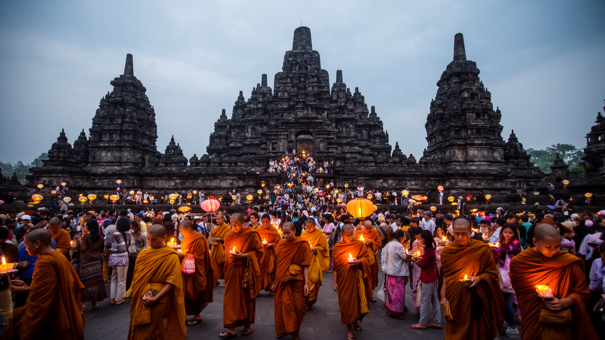
ボロブドゥールは観光地である前に、仏教徒にとって特別な巡礼の場所です。ワイサックの時期には、インドネシア国内外から僧侶と信徒が集まり、祈り、行列、灯火、瞑想を通じて寺院を聖地として使います。普段は写真撮影や見学の動線として見られがちな回廊も、巡礼の日には歩く順序、沈黙、読経、身体の向きが重みを持ちます。周辺住民の多くはイスラム教徒であり、仏教行事は地域の宗教構成から見ると少数者の儀礼です。それでも国家、地方政府、観光事業者、地域住民は、この行事を文化的な資産として支えています。ここにはインドネシアの多宗教性が見えます。古代仏教の遺産が、現代のイスラム多数社会の中で保護され、世界の仏教徒を迎える場所になっているのです。ただし巡礼と観光は同じではありません。大人数の来訪は交通、警備、清掃、宿泊、露店の調整を必要とし、祈りの静けさと観光のにぎわいをどう分けるかが課題になります。聖地を尊重するには、服装や撮影だけでなく、祈る人の時間を妨げない配慮が求められます。ワイサックは寺院に宗教的な意味を戻す一方、地域に収入と負担を同時にもたらします。ボロブドゥールの強さは、その二つを隠さず抱える点にあります。巡礼の夜に灯りが上がる時、寺院は博物館ではなく使われる聖地になります。その時間を守る管理が、訪問者の感動と信徒の尊厳を両立させます。
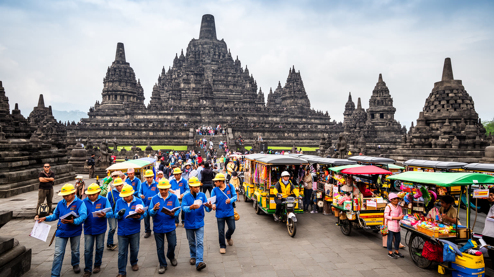
ボロブドゥールの経済は、寺院の名声に支えられています。宿泊、飲食、ガイド、送迎、駐車場、土産物、写真、清掃、警備、庭園管理、修復、農産物販売、村落体験が、訪問者の滞在を作ります。観光が好調な時期には、農家の若者や女性が接客、調理、工芸、案内の仕事を得て、家計に現金を入れます。しかし、この収入は外部環境に敏感です。噴火や火山灰、国際的な旅行不安、感染症、燃料価格、入場規制、天候はすぐに予約数を変えます。寺院のチケット収入や大型ホテルの売上が、周辺村の小さな店や手仕事へどの程度届くかも重要です。観光地では、表の笑顔と裏の労働条件がずれやすく、長時間労働、低い歩合、季節ごとの仕事量の差が暮らしを不安定にします。英語やデジタル予約に対応できる人は機会を得やすい一方、高齢者や小規模農家は変化に追いつきにくい場合があります。ボロブドゥールを経済として読むなら、訪問者数だけでなく、観光の利益が誰に残るか、地域の技能がどう育つか、農業と兼業できるかを見る必要があります。遺産は石だけでは守れません。寺院を支える人が、住む場所、学ぶ場、安定した収入を持てることが、保存の土台になります。特に女性の家内労働や若者の非正規仕事は統計に表れにくく、観光収入の実感を左右します。地域の小規模事業が予約、決済、言語対応を学べる支援も、利益を地元へ残す鍵です。
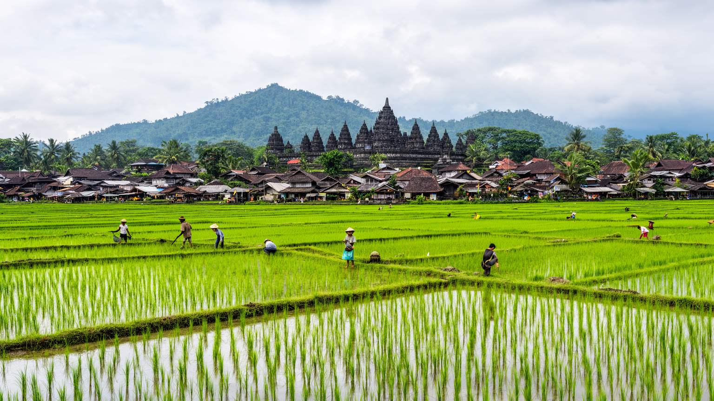
ボロブドゥール周辺の村は、寺院の周縁ではなく、遺産景観そのものを形作る生活空間です。水田、畑、竹林、果樹、家族の庭、モスク、小学校、川沿いの道が、観光客の歩く風景を支えています。近年は村落観光やホームステイ、サイクリング、料理体験、工芸体験が増え、寺院だけを短時間で見る旅行から、周辺の暮らしに触れる滞在へ広げる動きがあります。これは地域に収入を分散する可能性を持ちますが、生活の私的な空間が観光商品になる危うさもあります。農家にとって田畑は写真の背景ではなく、収入、食、相続、灌漑、労働の場です。観光客が増えるほど、道の安全、騒音、ごみ、土地価格、撮影マナーが課題になります。村の家屋や小道を美しい景観として守るには、外から来る人の都合だけでなく、住民が住み続け、農業を続けられる条件が必要です。観光で得た収入が水路の修理、学校、共同施設、若者の訓練へ戻れば、遺産景観は地域の誇りになります。反対に、外部資本だけが利益を持ち去れば、村は背景として消費されます。ボロブドゥールの村落観光は、寺院を中心にしながら、住民の日常を損なわずに訪問者を受け入れる細かな調整の上に成り立っています。畑の畦道や家の前の小さな商いは、旅行者には新鮮でも住民には毎日の生活です。訪問の作法を共有する仕組みが、親密さと距離の両方を守ります。
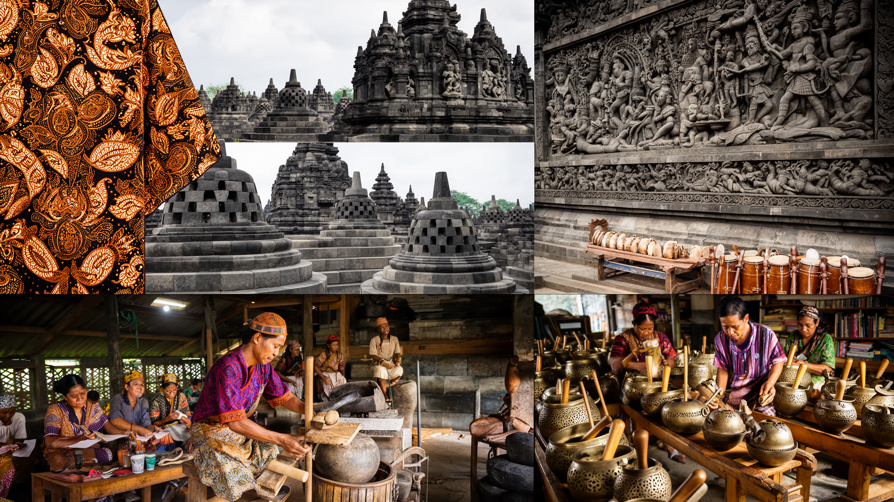
ボロブドゥールの文化は寺院の石彫だけで完結しません。周辺には石彫、木工、竹細工、バティック、食品加工、音楽、舞踊、影絵芝居、村の祭礼があり、ジャワ文化の層が観光と日常を結んでいます。土産物店に並ぶ小さな仏塔や仏像は、時に量産品として消費されますが、職人の技術や地域の素材を知る入口にもなります。工芸は観光客に持ち帰られる商品であると同時に、若者が地域で働く選択肢です。ただし、安価な輸入品や大量生産品が市場を占めると、地元の手仕事は価格競争に巻き込まれます。文化を守るとは、古い形を固定することではなく、作り手が学び、試作し、販売し、生活できる循環を作ることです。ジャワの村では、イスラムの行事、家族の祝い、祖先への敬意、地域の相互扶助が暮らしを組み立てます。古代仏教の寺院と現代のジャワ文化は、異なる時代のものですが、観光の現場では一つの地域経験として重なります。訪問者が工芸を買い、演奏や舞踊を見る時、その背後にある稽古、材料費、家族労働、地域の祭礼を想像できるかが大切です。ボロブドゥールの文化的な厚みは、石の記念碑と生きた手仕事が互いに照らし合うところにあります。学校や工房で技術を学ぶ若者が地域に残れるなら、観光は文化の消費で終わりません。手仕事の価値を正当に支払う市場が、次の世代の表現を支えます。
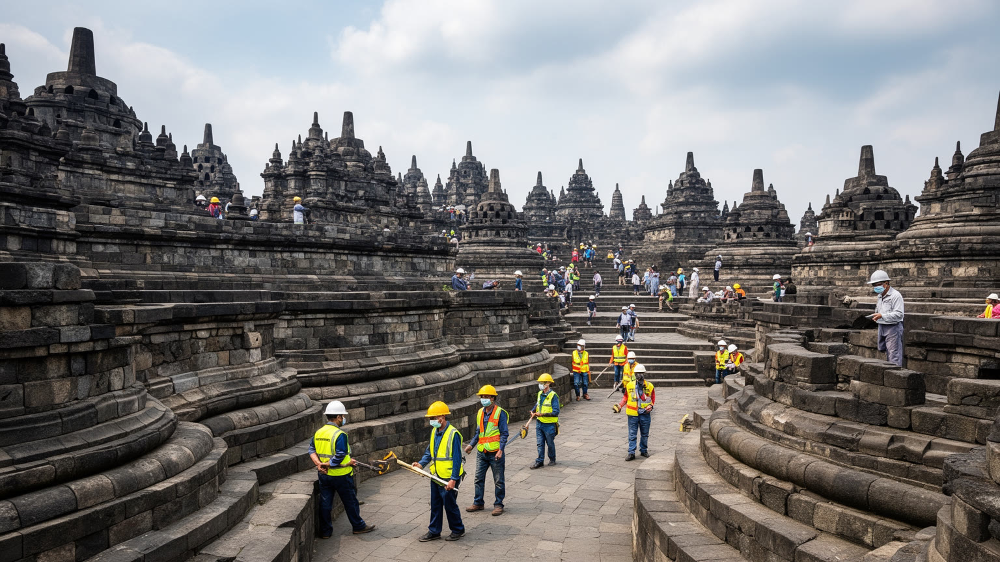
ボロブドゥールは世界遺産であるため、保存と利用の均衡が常に問われます。石材は雨、湿気、温度変化、苔、風化、人の接触で傷みます。大量の来訪者が同じ階段や回廊を歩けば、摩耗や混雑、安全の問題が起きます。そのため入場者数、登壇できる範囲、時間帯、靴、順路、警備、清掃、修復作業の調整が必要になります。保存政策は専門家だけの課題ではありません。入場制限が強まれば、ガイド、写真業者、土産物店、周辺の飲食店の収入にも影響します。逆に、観光を優先しすぎれば寺院そのものが傷み、長期的な価値を失います。世界遺産の管理では、国の機関、地方政府、ユネスコ、研究者、観光業者、村の住民がそれぞれ異なる利害を持ちます。重要なのは、石を守ることと生活を守ることを対立させない設計です。保存のための規制が必要な場合でも、住民への説明、代替収入、交通整理、露店の配置、教育の機会がなければ不満が残ります。ボロブドゥールは観光客に開かれているからこそ、使い方を厳密に考えなければならない遺産です。短期的な集客より、寺院が百年後にも巡礼と学びの場所であり続けることを基準に、地域の経済を組み直す必要があります。修復や調査の情報を公開し、なぜ制限が必要なのかを来訪者にも住民にも説明することが信頼を作ります。管理の透明性が高いほど、規制は負担だけでなく共有された保護の約束になります。
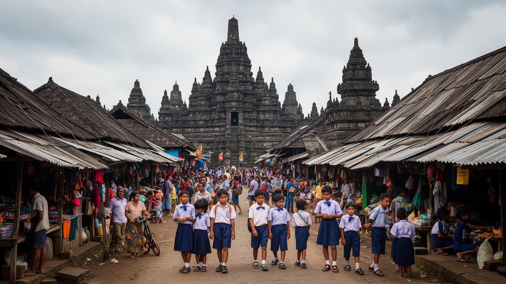
世界的な名所の近くに暮らすことは、必ずしも豊かさだけを意味しません。ボロブドゥールの住民には、農地の維持、教育費、医療、若者の就職、住宅、道路、排水、ごみ、土地価格、観光依存という現実があります。中心に近い場所では商売の機会が増える一方、土地や家賃が上がり、昔からの住民が住み続けにくくなる可能性があります。寺院周辺の景観規制は保存に必要ですが、住宅改修や小規模事業に制約を与えることもあります。観光収入がある世帯と、農業や日雇いに頼る世帯の差も見えにくい課題です。若者は英語や接客、デジタル販売を学べば機会を広げられますが、教育や資本に届かない人は低賃金の周辺仕事にとどまりやすくなります。女性は土産物販売、食品づくり、宿泊、家族のケアを担うことが多く、見えない労働が観光地の日常を支えます。災害時や観光不振時には、農業と親族ネットワークが安全網になりますが、それだけでは十分ではありません。ボロブドゥールを読むには、寺院の入場者数だけでなく、住民の学校への道、水道、診療所、農地の相続、若者の進路まで視野に入れる必要があります。遺産が地域の誇りであり続けるには、名所の価値が生活の安心へ変わる仕組みが欠かせません。観光地として知られるほど、住民の普通の暮らしは見えにくくなります。だからこそ統計と路地の両方を見て、収入、時間、ケアの負担を読む姿勢が必要です。
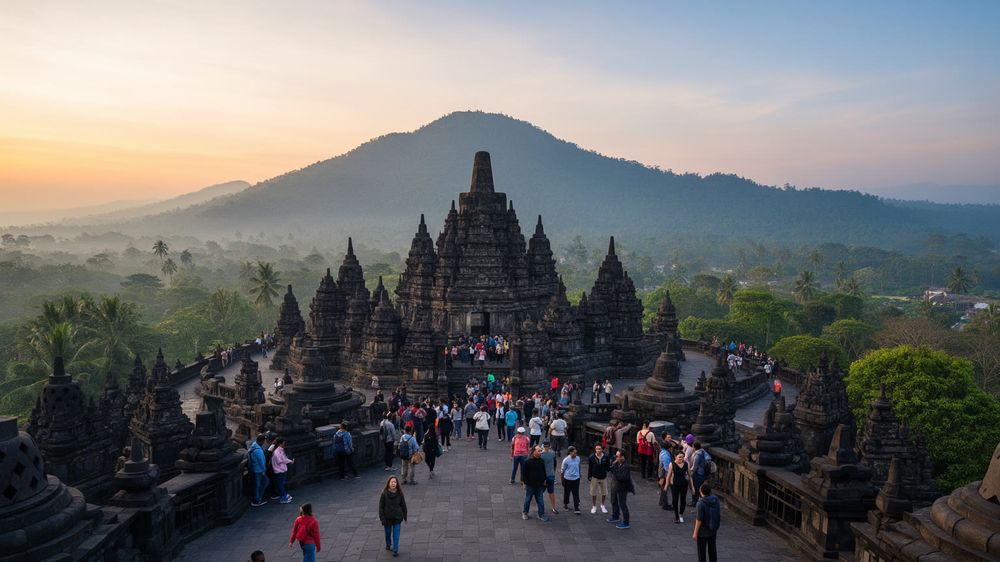
ボロブドゥール観光は、しばしば朝霧の寺院と日の出の印象に集約されます。しかし、滞在の価値は寺院の上から見る一枚の景色だけではありません。ムノレ丘陵の展望、村道の散歩、水田の季節、川沿いの風、朝の市場、地元の食堂、工房、モスクから聞こえる祈り、ワイサックの灯火が、地域を多層的に見せます。短時間のツアーでは、移動、撮影、買い物が急ぎ足になり、住民の生活リズムに触れにくいまま終わります。ゆっくり滞在すれば、農作業の時間、雨季の土の匂い、子どもの通学、夜の静けさ、村の会話が見えてきます。ただし、観光客が長く滞在するほど、静かな生活空間へ入り込む責任も増えます。写真を撮る場所、服装、騒音、ごみ、支払いの公平さ、私有地への配慮が、滞在の質を決めます。景観を守るとは、看板や建物の高さだけの問題ではなく、村の暮らしを過度に演出しないことでもあります。ボロブドゥールの魅力は、古代寺院の壮大さと、周辺の小さな生活の近さにあります。その近さを尊重できる旅行者が増えれば、観光は単なる消費ではなく、地域の誇りを支える関係になります。朝霧の外側を歩くことが、この遺産景観を深く読む第一歩です。交通や宿泊の選び方も景観に影響します。日帰りで急ぐより、地域の店やガイドに時間を配る滞在が、寺院の外側にある暮らしを見えるものにします。
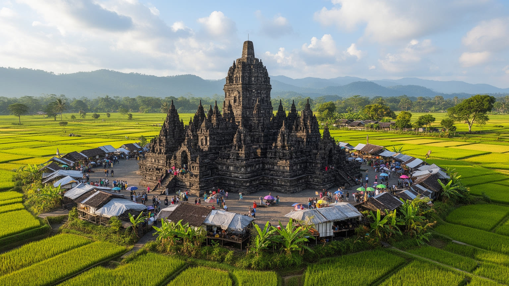
ボロブドゥールは、人口規模や経済規模で世界都市と呼ばれる場所ではありません。それでも重要なのは、世界遺産、仏教巡礼、イスラム多数社会、ジャワ農村、観光労働、火山地形、保存政策が一つの小さな地域に凝縮されているからです。寺院は過去の王朝を語りますが、現在の都市性は周辺の村、道路、宿泊、学校、水田、工芸、行政、国際機関との関係の中にあります。古代の石塔を見る世界の視線が、住民の暮らしへどう返るかがこの地域の核心です。観光客が増えれば雇用は生まれますが、過密、摩耗、土地価格、生活空間の消費も進みます。保存を強めれば寺院は守られますが、住民の商売や移動に制約が生じることもあります。だからこそボロブドゥールは、遺産都市の成功を訪問者数だけで測れないことを教えます。石を守る技術、巡礼の尊厳、村の収入、農地の持続、水と道路の管理、若者の教育がつながって初めて、遺産は生きた場所になります。ボロブドゥールを読むことは、世界が見に来る景色の内側で、誰が働き、祈り、住み、未来を選ぶのかを考えることです。小さな郡でありながら、ここには観光と生活、宗教と国家、保存と開発をめぐる世界的な問いが鮮明に現れています。寺院の価値を大きくするほど、周辺の小さな暮らしを軽く扱うことはできません。石塔と村を同じ地図で読む時、ボロブドゥールは名所ではなく、一つの社会として立ち上がります。